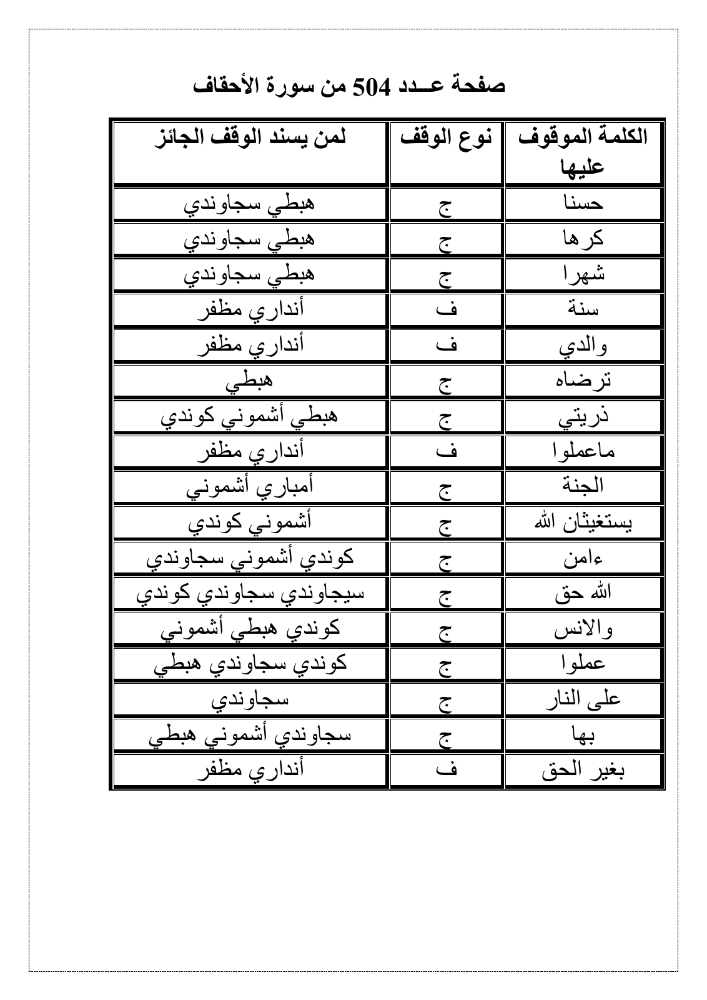

First: PDF page 500 · table row 2

Then: Hafs mushaf page 504 · ayah 46:15

A
B
The PDF lists كرها once, with category ج. In Hafs 46:15 it occurs twice: A in حَمَلَتْهُ أُمُّهُ كُرْهًا (word 7), and B in وَوَضَعَتْهُ كُرْهًا (word 9). B already has the sign ۖ; A has no stop sign. The table alone does not specify A, B, or both, so neither has been selected.

These outlines are for this manual comparison. The extraction matcher continues to use the local Hafs text.